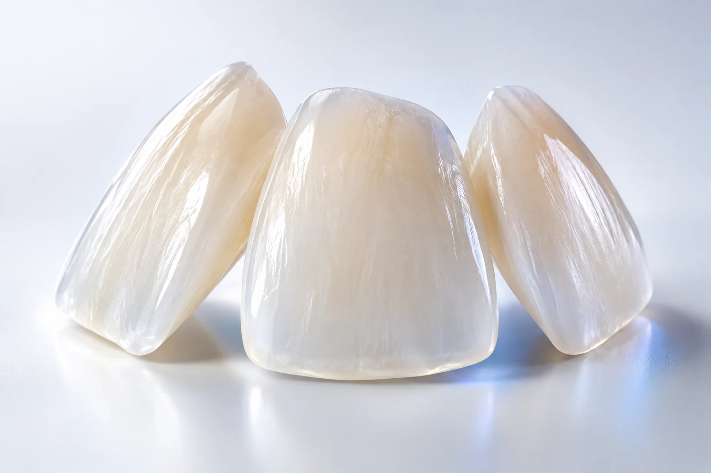
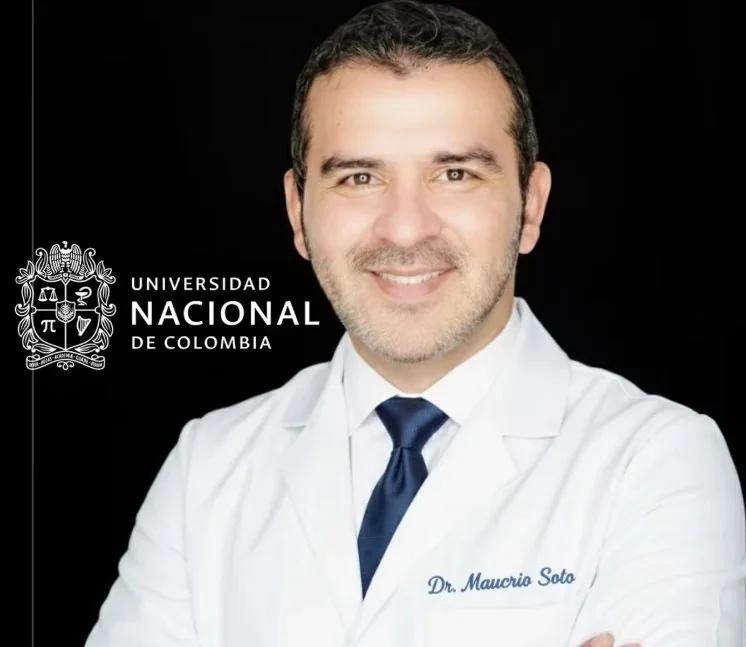

01

Porcelain veneers
Explore material, shape and proportion as part of a personalised smile plan.

Conceptual dental illustrationA smile with your character. Dentistry with a plan.
BUCARAMANGA, COLOMBIA Meet Dr. Soto ↗
Meet Dr. Soto ↗Explore material, shape and proportion as part of a personalised smile plan.

A conversation about your goals, the available approaches and their maintenance.
Planning and communication supported by the digital approaches presented by the practice.
Dr. Mauricio Soto brings together orthodontics, aesthetic dentistry and digital planning in his Bucaramanga practice. The starting point is understanding your health and your expectations.
Meet the professional ↗Tell the practice what you would like to explore. Discuss materials, oral health and expectations with Dr. Soto.
Confirm the assessment, visits and maintenance before booking a trip. Your personal treatment plan determines the sequence.
Ask the practice about remote consultation, language and coordination for your individual case.
Your clinician determines the plan, visits and follow-up after assessment. Confirm this before arranging travel.
This is a demonstration of the proposed experience. No appointment is booked and no data is sent. Use the official channels for real availability.